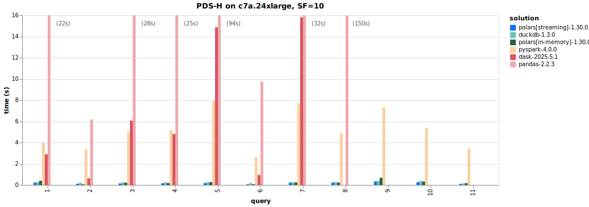
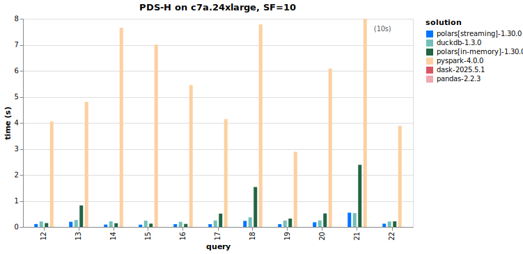

Strategies for Medium-Sized Data#
What is “Medium-Sized” Data?#
In quantitative finance, we frequently encounter datasets that are too large for naive in-memory processing with Pandas but small enough to fit on a single machine. We call this medium-sized data—roughly 1 GB to 100 GB.
Examples include:
FINRA TRACE: 423M+ corporate bond transactions since 2002
CRSP daily stock data: decades of daily returns across thousands of securities
Options data: millions of contracts with intraday quotes
These datasets are too large to casually pd.read_csv() into memory, but they
don’t require the distributed computing infrastructure of a Hadoop or Spark
cluster. The strategies on this page address this “medium-sized” regime.
The Data Size Spectrum
Size |
Tools |
Example |
|---|---|---|
Small (< 1 GB) |
Pandas, Excel |
Fama-French factors |
Medium (1–100 GB) |
Polars, DuckDB, Pandas (with care) |
TRACE, CRSP |
Big (100 GB+) |
Spark, Dask, distributed systems |
NYSE TAQ (intraday) |
This page focuses on the medium tier.
Pandas vs. Polars#
Pandas: The Incumbent#

Pandas has been the dominant DataFrame library in Python since its release in 2008. It has an enormous ecosystem, deep integration with scikit-learn, matplotlib, and virtually every data science library, and is familiar to nearly every Python data practitioner.
However, Pandas has fundamental limitations when working with medium-sized data:
Single-threaded: Pandas operations use only one CPU core.
Eager evaluation: Every operation executes immediately, preventing cross-operation optimization.
High memory usage: Pandas often requires 2–5x the size of the data in RAM.
Copy-heavy internals: Many operations create full copies of the data.
Polars: The Challenger#

Polars is a modern DataFrame library written in Rust and built on Apache Arrow. First released in 2021, it has rapidly gained adoption in the data engineering and quantitative finance communities. It offers several key advantages:
Speed: Polars is typically 3–10x faster than Pandas on medium-to-large datasets, thanks to its Rust backend and cache-efficient columnar processing.
Memory efficiency: Polars uses roughly 87% less memory than Pandas for the same data. Loading a 1 GB CSV might use ~1.4 GB in Pandas vs. ~180 MB in Polars.
Multi-core parallelism: Polars automatically uses all available CPU cores. No configuration needed.
Lazy evaluation: Polars can build a query plan and optimize it before execution (more on this below).
Streaming: Polars can process datasets larger than RAM by streaming data in batches.
Consistent API: Designed from scratch, Polars avoids many of Pandas’ historical API inconsistencies.
Benchmark Comparison#
The following table gives approximate speedups for common operations (exact numbers vary by hardware, data shape, and operation):
Operation |
Approximate Speedup (Polars vs. Pandas) |
|---|---|
CSV read (1 GB file) |
~5–10x faster |
Filter + aggregate |
~5–8x faster |
Join (two large tables) |
~4–14x faster |
GroupBy aggregate |
~3–7x faster |
Peak memory usage |
~80–90% less |
 
See the full benchmark here.
When is Pandas still the right choice?
Small datasets (under ~500 MB) where the speed difference is negligible.
ML workflows tightly coupled to scikit-learn, PyTorch, or TensorFlow (which expect Pandas DataFrames or NumPy arrays).
Quick exploratory analysis where familiarity and ecosystem breadth matter more than speed.
Legacy codebases with heavy Pandas dependencies.
That said, converting between Pandas and Polars is straightforward: pl.from_pandas(df) and df.to_pandas().
Lazy Evaluation#
One of Polars’ most powerful features is lazy evaluation. This is the same concept used by SQL query engines and Apache Spark, and it is the key to unlocking many of the performance benefits described above.
Eager vs. Lazy Execution#
In eager mode (the default in Pandas, and available in Polars via pl.read_*),
each operation executes immediately when called:
import polars as pl
# --- Eager execution ---
df = pl.read_csv("trades.csv") # Reads entire file now
df = df.filter(pl.col("volume") > 1000) # Filters now
df = df.select("date", "price", "volume") # Selects columns now
In lazy mode (Polars’ pl.scan_* functions), operations are recorded into a
query plan but not executed. Execution only happens when you call .collect():
# --- Lazy execution ---
q = (
pl.scan_csv("trades.csv") # Nothing happens yet
.filter(pl.col("volume") > 1000) # Recorded in query plan
.select("date", "price", "volume") # Recorded in query plan
)
# The query optimizer rewrites the plan, then executes it all at once
result = q.collect()
The lazy version allows Polars’ query optimizer to analyze the entire chain of operations and rewrite it for efficiency before any data is touched.
Inspecting the Query Plan#
You can inspect what Polars will actually do before executing:
q = (
pl.scan_csv("trades.csv")
.filter(pl.col("volume") > 1000)
.select("date", "price", "volume")
)
# Print the optimized query plan
print(q.explain())
# Visualize the plan as a graph (requires graphviz)
q.show_graph()
The output shows the execution order, with optimizations applied. For example, you’ll see that the filter has been “pushed down” to the scan step, meaning Polars will filter rows while reading the file, rather than reading everything and then filtering.
Why Lazy Evaluation Matters#
The query optimizer applies several transformations automatically:
Predicate pushdown: Filters are moved as close to the data source as possible.
Projection pushdown: Only the columns you actually need are read from disk.
Common subexpression elimination: Duplicate computations are identified and removed.
Operation fusion: Multiple operations are combined into a single pass over the data.
Tip
Think declaratively: tell Polars what you want, not how to compute it. The optimizer will figure out the most efficient execution strategy.
Predicate Pushdown#
Predicate pushdown is one of the most impactful optimizations, so it deserves a closer look.
What is a Predicate?#
A predicate is simply a filter condition—the equivalent of a SQL WHERE
clause. For example: pl.col("year") == 2023 or pl.col("volume") > 1000.
What is Predicate Pushdown?#
Predicate pushdown means moving filter operations as close to the data source as possible, so data is filtered during reading rather than after loading everything into memory. This:
Eliminates computation on rows that will be discarded
Reduces the amount of data read from disk
Lowers peak memory consumption
How It Works with Parquet Files#
Parquet files store metadata including min/max statistics for each row group (a chunk of rows). With predicate pushdown:
Polars reads the Parquet metadata first.
It evaluates the filter predicate against the min/max of each row group.
Row groups where the predicate cannot be satisfied are skipped entirely.
Only row groups that might contain matching data are read.
# Polars pushes the filter into the Parquet reader.
# Row groups where "year" cannot be 2023 are skipped entirely.
result = (
pl.scan_parquet("data/trades.parquet")
.filter(pl.col("year") == 2023)
.filter(pl.col("volume") > 1000)
).collect()
How It Works with Hive-Partitioned Data#
With Hive-partitioned data (directory structure like year=2023/month=06/data.parquet),
predicate pushdown is even more powerful: Polars can skip entire directories
before reading any files. We discuss Hive partitioning in detail below.
Discussion
How does predicate pushdown relate to indexing in a relational database? What are the similarities and differences?
Connection to Apache Spark#
The concepts we’ve discussed—lazy evaluation, query plans, and predicate pushdown—are not unique to Polars. They are foundational ideas in data processing that originated in database systems and are central to Apache Spark, the dominant framework for distributed big data processing.
What is Apache Spark?#
Fig. 6 Apache Spark logo#
Apache Spark is an open-source distributed computing engine for large-scale data processing. Its architecture consists of:
Driver program: The main process that defines transformations and coordinates execution.
Cluster manager: Allocates resources across worker machines (YARN, Kubernetes, etc.).
Executors: Worker processes on cluster nodes that run tasks in parallel.
Spark uses the same lazy evaluation model as Polars:
Transformations (lazy):
filter,select,groupBy,join— these build up a Directed Acyclic Graph (DAG) of operations but do NOT execute.Actions (eager):
collect,count,show— these trigger actual computation.
When an action is invoked, Spark’s Catalyst optimizer analyzes the DAG and applies optimizations—including predicate pushdown, projection pushdown, and join reordering—before executing the physical plan across the cluster.
When to Use Spark vs. Polars#
Polars: Your data fits on a single machine (even if it doesn’t fit in RAM—Polars can stream). This is the right tool for most quantitative finance workflows.
Spark: Your data is truly massive (terabytes+) and must be distributed across a cluster. Common in tech companies, large-scale web analytics, and production ML pipelines.
Note
We don’t teach Spark in this course, but understanding that Polars uses the same foundational concepts (lazy evaluation, DAGs, predicate pushdown) means that if you ever need to scale up to Spark, the mental model transfers directly.
Streaming#
The Problem: Data Larger Than Memory#
What happens when your dataset is larger than available RAM? Even on a machine with 64 GB of memory, a 100 GB dataset won’t fit. You have two options: process the data in chunks, or use a tool that handles this for you.
The Old Way: Manual Chunking in Pandas#
Pandas offers a chunksize parameter for reading files in pieces:
import pandas as pd
# Manual chunking: you manage iteration, aggregation, and edge cases
chunks = []
for chunk in pd.read_csv("large_file.csv", chunksize=100_000):
filtered = chunk[chunk["volume"] > 1000]
chunks.append(filtered)
result = pd.concat(chunks, ignore_index=True)
This approach has several problems:
Manual: You must choose the chunk size, manage iteration, and handle aggregation across chunks.
Error-prone: Aggregations that span chunk boundaries (e.g., group-by operations) require careful logic to combine partial results correctly.
No optimization: Each chunk is processed independently with no cross-chunk query optimization.
Verbose: Simple queries become multi-line loops.
The Polars Way: Automatic Streaming#
Polars’ streaming engine handles all of this automatically:
import polars as pl
q = (
pl.scan_csv("large_file.csv")
.filter(pl.col("volume") > 1000)
.group_by("ticker")
.agg(pl.col("volume").sum())
)
# Option 1: Collect in streaming mode (result fits in memory)
result = q.collect(engine="streaming")
# Option 2: Sink directly to Parquet (result doesn't need to fit in memory)
q.sink_parquet("filtered_output.parquet")
The streaming engine:
Automatically determines optimal batch sizes based on available memory and number of columns.
Optimizes the full query plan before streaming begins (predicate pushdown still applies).
Correctly handles aggregations across batch boundaries.
Falls back to in-memory execution if an operation cannot be streamed.
Manual chunking vs. streaming in practice
In the TRACE case study, we use a month-by-month partition iterator pattern. This is a form of manual chunking, but it works well because the data is naturally partitioned by month and each partition can be processed independently. Polars streaming is more appropriate when you need to aggregate across the entire dataset.
Hive-Partitioned Parquet Files#
What is Hive Partitioning?#
Hive partitioning is a directory-based scheme for organizing tabular data. Partition column values are encoded directly in folder names:
data/
└── trades/
├── year=2022/
│ ├── month=01/
│ │ └── data.parquet
│ ├── month=02/
│ │ └── data.parquet
│ └── ...
└── year=2023/
├── month=01/
│ └── data.parquet
└── ...
The name comes from Apache Hive, the original SQL-on-Hadoop query engine that popularized this convention. Today, it is supported by virtually every data processing framework, including Polars, Spark, DuckDB, and PyArrow.
Why Hive Partitioning?#
Predicate pushdown at the file level: When you filter on a partition column (e.g.,
year == 2023), Polars can skip entire directories without reading any files.Incremental processing: You can add new partitions (e.g., a new month) without rewriting existing data.
Parallelism: Each partition can be processed independently.
Human-readable: The directory structure makes it easy to navigate data on disk.
Reading Hive-Partitioned Data with Polars#
Polars supports scanning Hive-partitioned Parquet datasets out of the box.
When scan_parquet receives a directory path, Hive partition parsing is
enabled by default:
import polars as pl
# Polars automatically detects the hive partition structure
# and adds "year" and "month" as columns in the LazyFrame
lf = pl.scan_parquet("data/trades/")
# This filter skips the year=2022 directories entirely
result = (
lf.filter(pl.col("year") == 2023)
.filter(pl.col("month").is_in([1, 2, 3]))
.collect()
)
When passing a glob pattern or explicit file paths, you must explicitly enable Hive partitioning:
# With a glob pattern
lf = pl.scan_parquet(
"data/trades/**/*.parquet",
hive_partitioning=True,
)
# With explicit file paths
lf = pl.scan_parquet(
[
"data/trades/year=2023/month=01/data.parquet",
"data/trades/year=2023/month=02/data.parquet",
],
hive_partitioning=True,
)
For more details, see the Polars Hive partitioning documentation.
Segue: The TRACE Case Study#
All of the concepts on this page come together in our TRACE corporate bond data case study.
The Data#
FINRA’s Trade Reporting and Compliance Engine (TRACE) records every over-the-counter corporate bond transaction in the United States. The dataset contains 423 million+ trades spanning from July 2002 to the present. The raw data, combined with bond characteristics from FISD, credit ratings, and yield curve data, can exceed 100 GB.
This is a textbook example of “medium-sized data”: too large for naive Pandas, but manageable on a single machine with the right tools.
How the Case Study Uses These Concepts#
The case study repository applies every strategy discussed on this page:
Hive partitioning: All data is organized as
_data/{dataset}/year=YYYY/month=MM/data.parquet. Utility functions manage
partition paths, scan for existing partitions, and write new ones:
# From the case study: partition path utility
def partition_path(base_dir, dataset, year, month):
return base_dir / dataset / f"year={year}" / f"month={month:02d}" / "data.parquet"
Lazy scanning: The notebooks use scan_parquet with Hive partitioning to
explore the data without loading it all into memory:
trace_enh = pl.scan_parquet(
"_data/trace_enhanced/**/*.parquet",
hive_partitioning=True,
allow_missing_columns=True,
)
# Count rows without loading data
n_rows = trace_enh.select(pl.len()).collect().item() # 423M+
Month-by-month processing: The cleaning pipeline iterates through partitions one month at a time, keeping peak memory bounded:
for year, month, df in _iter_partitions(input_dir, start_date, end_date):
df = apply_all_filters(df) # Dick-Nielsen cleaning filters
write_partition(df, output_dir, dataset, year, month)
Schema enforcement: Since data from WRDS can arrive with inconsistent types, the pipeline normalizes column types before writing:
df = enforce_schema(df, {
"trd_exctn_dt": pl.Date,
"rptd_pr": pl.Float64,
"entrd_vol_qt": pl.Float64,
})
What’s Next#
In the following notebooks, we walk through the TRACE data sources and the cleaning pipeline in detail.
Further Reading#
Polars Exercises: Code Snippets — Code snippets from in-class Polars exercises